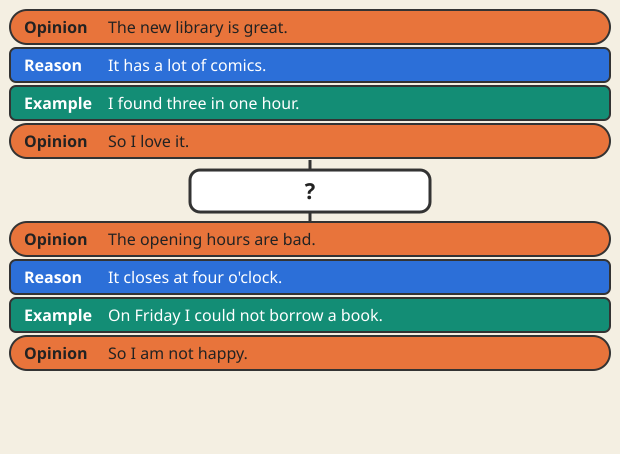

Verbindungswörter: Burger mit einem Schild verbinden
Mit einem KI-Tutor lernen
Ein KI-Tutor erklärt dir diese Seite und hilft dir bei den Aufgaben. Wähl deinen Assistenten:
Mit Claude öffnen Mit ChatGPT öffnen Mit Mistral Vibe öffnen
Du nutzt dein eigenes Konto beim Anbieter. Der Assistent ist kein Angebot von lernapps.net: lernapps liefert nur Inhalte und Aufgaben. Die Wahl gilt für alle Seiten, nur auf diesem Gerät.
Ein leeres Schild zwischen zwei Burgern

© CC-BY-4.0Zwei Burger übereinander. Das Schild in der Mitte ist noch leer.
Du siehst zwei Burger über die neue Bücherei, einen oberen und einen unteren.
Aufgabe
Lösung
Der zweite Burger ist die Folge des ersten
Aus dem ersten Burger folgt der zweite nicht.
Der zweite Burger sagt das Gegenteil richtige Antwort
Auf Lob folgt Kritik. Das ist ein Gegensatz.
Der zweite Burger sagt noch etwas Gutes
Lies noch einmal den unteren Burger.
Das Schild zeigt die Beziehung.
Das kannst du danach: Du verbindest zwei Gedanken mit dem richtigen Schild-Wort.
Wie kommst du zur Schule? Ein Chat
| Englisch | Deutsch |
|---|---|
| however | aber, jedoch |
| therefore | deshalb, darum |
| moreover | außerdem |
| on the one hand … on the other hand | einerseits … andererseits |
| dangerous | gefährlich |
| on the way | unterwegs |
| keep fit | fit bleiben |
| main road | Hauptstraße |
| umbrella | Regenschirm |
Die Zahlen sind die Zeilen.
1 Ellie: Mr Hill wants us to write about our way to school. Do you walk, cycle or take the bus?
2 Amir: I cycle. It is quick. However, the main road is dangerous in the morning.
3 Sophie: On the one hand, I like the bus because I can read on the way. On the other hand, it is often late.
4 Ellie: I walk. It takes twenty minutes, so it keeps me fit. Moreover, I meet my friends on the way.
5 Amir: Walking is slow. However, you are right about the friends.
6 Sophie: What about rain, Ellie? Do you still walk?
7 Ellie: Yes, I take an umbrella. Rain is not a big problem for me.
8 Sophie: The bus was late again today. Therefore, I leave home ten minutes earlier now.
9 Amir: Good idea! I have an idea for Mr Hill, too. We can write about the good and the bad things of each way.
10 Ellie: Yes, and we can read our texts to the class on Friday.
Das Schild sagt, wie zwei Gedanken zusammenhängen
 © CC-BY-4.0
© CC-BY-4.0Zwei gestapelte Burger. Das Schild zwischen ihnen ist das Verbindungswort.
Merke
Jedes Schild zeigt eine andere Beziehung.
- However zeigt einen Gegensatz: I like the park. However, it is often windy.
- Therefore zeigt eine Folge: The pool is closed. Therefore, we play outside.
- Moreover ergänzt etwas Zusätzliches: The museum is free. Moreover, it is warm inside.
- On the one hand … on the other hand … zeigt zwei Seiten einer Sache: On the one hand, a cat is quiet. On the other hand, it needs care.
Diese Wörter beginnen einen neuen Satz: Davor steht ein Punkt, danach ein Komma. Zwei ganze Sätze nur mit einem Komma zu verbinden ist ein Fehler. However und because sind verschieden: Because gibt einen Grund, however einen Gegensatz. Und but und however zusammen brauchst du nie.
Beziehung erkennen, Wort wählen, Sätze schreiben
Aufgabe
Lösung
Sie geht zu Fuß wie Ellie
Ellie geht zu Fuß, nicht Sophie.
Sie fährt mit dem Rad
Das tut Amir.
Sie fährt früher von zu Hause los richtige Antwort
Das sagt Sophie in Zeile 8.
Nach therefore steht die Folge.
Aufgabe
Lösung
Zeile 2 richtige Antwort
Amir spricht über das Rad.
Zeile 3
Hier steht on the one hand … on the other hand.
Zeile 5 richtige Antwort
Amir spricht über das Gehen.
Zeile 8
Hier steht therefore.
However zeigt einen Gegensatz.
Aufgabe
Lösung
Richtige Antwort: The bike is cheap. However, it has no light. – Gegensatz; It is dark. Therefore, I wear a jacket. – Folge; The path is short. Moreover, it is safe. – Ergänzung; On the one hand, walking is slow. On the other hand, it is healthy. – zwei Seiten
Vier Beziehungen.
Aufgabe
Wähle das Wort, das zur deutschen Beziehung passt.
- Ich fahre gern Rad. Aber es ist oft kalt. → I like cycling. …, it is often cold.
- Der Bus ist teuer. Deshalb gehe ich zu Fuß. → The bus is expensive. …, I walk.
- Der Weg ist kurz. Außerdem ist er schön. → The way is short. …, it is nice.
Lösung
- I like cycling. However, it is often cold.
- The bus is expensive. Therefore, I walk.
- The way is short. Moreover, it is nice.
Aufgabe
Lösung
Richtige Antwort: 1. I like walking to school., 2. It is good for my health., 3. However, it is slow in the morning., 4. Therefore, I get up early.
Meinung, Gegensatz, Folge.
Aufgabe
Schreibe auf Englisch. Satz 1: Das Rad ist schnell. Aber es ist nicht sicher. Satz 2: Es regnet. Deshalb nehme ich den Bus. Satz 3: Radfahren ist billig. Außerdem ist es gesund. Satz 4: Einerseits ist der Zug schnell. Andererseits ist er teuer.
Tipp
Achte auf Punkt und Komma.
- bike · quick · however · not · safe
- it · rain · therefore · I · take · bus
- cycling · cheap · moreover · healthy
- on the one hand · train · quick · on the other hand · expensive
Lösung
- The bike is quick. However, it is not safe. (auch richtig: The bike is quick. However, it isn't safe.; The bike is quick. However, it's not safe.; The bike is fast. However, it is not safe.; The bike is fast. However, it isn't safe.; The bike is fast. However, it's not safe.)
- It rains. Therefore, I take the bus. (auch richtig: It is raining. Therefore, I take the bus.)
- Cycling is cheap. Moreover, it is healthy.
- On the one hand, the train is quick. On the other hand, it is expensive. (auch richtig: On the one hand, the train is fast. On the other hand, it is expensive.)
Aufgabe
Hör zu und schreibe, was du hörst.
Tipp
Achte auf Punkt und Komma.
- KI
- KI
- KI
Lösung
- The lesson was long. However, it was interesting.
- It was very cold. Therefore, we stayed inside.
- Moreover, our teacher is kind and funny.
Deine zwei Burger mit einem Schild
Aufgabe
Hör zu, sprich nach und nimm dich auf. Vergleiche dann mit dem Original.
Tipp
Hör zu. Sprich dann langsam nach.
- I understand your point. However, I do not agree.KI
- Therefore, we need a better idea.KI
- On the other hand, it is a lot of work.KI
Zum Aufnehmen braucht diese Aufgabe JavaScript. Die Beispiele kannst du auch ohne anhören.
Lösung
- I understand your point. However, I do not agree.
- Therefore, we need a better idea.
- On the other hand, it is a lot of work.
Offene Aufgabe
Wähle ein Thema, zu dem es zwei Seiten gibt (zum Beispiel ein Haustier). Schreibe zwei Burger aus je vier Sätzen. Verbinde sie mit einem Schild: however, therefore oder moreover.
Tipp
Die App bewertet nicht. Prüfe deinen Text anhand der Punkte.
Eine gute Antwort enthält:
Lösung
I think a dog is a good pet. A dog is a friend and it makes me go outside. For example, I walk with my dog for an hour every day. So a dog is a great pet. However, a dog needs a lot of time. A dog cannot stay alone all day. For example, a neighbour has to visit it twice a day when the family is at work. So a dog is not right for everybody.
Wie es weitergeht
Auf der nächsten Seite liest du einen Artikel der Schülerzeitung über Müll und Recycling. Dort setzt du die Verbindungswörter gleich ein.
Fehler gefunden oder eine Idee für diese App?